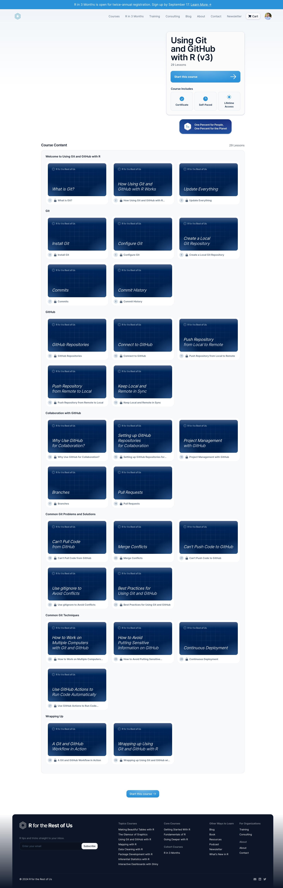

Using Git and GitHub with R
Overall Notes
- Please make architect in initial section a woman (to the degree that gender is visible)
- I’m using the name TidyBuild Studios for the architecture firm.
Here are a few links you might find useful:
- GitHub illustrated series
- The best explanation of Git + GitHub I’ve seen is the video Git for Humans
- The recording of our call from September 12, 2024 is here
Course Videos
The section below has all of the lessons and associated videos. FYI, first-level headers are sections and second-level headers (with lines under the titles) are lessons. You can see what the course looks like below:

Getting Started with Git and GitHub with R
Welcome to Using Git and GitHub with R
Animated video will show overall architect/blueprint metaphor. Let’s wait to work on it until the very end.
How the Course Works
No animated video
Update Everything
The idea of this lesson is that everything should be updated before you start working with git.
Animated video will show architect getting new tools (pens, paper, compass, protractor, drafting board, etc) before she actually starts working on blueprints.
Git
In this section of the course, we’re just working with git locally on the user’s system. In the metaphor, this means a single architect working in her own office on blueprints.
Install Git
In this lesson I show how to install git in order to use version control on your local system.
The animated video will show a portion of the architect’s office being cleared out in order to make space for filing cabinets, which will be added in the Create a Local Git Repository lesson below.
Configure Git
This lesson will show how to tell git what your name and email is for future use. Your name and email will be added to commits (see lesson below for explanation) so git has to know what they are.
Animated video will show architect getting customized sticky notes printed with her name and email on them. The sticky notes will be used later on in the commits video.
Create a Local Git Repository
The idea of this lesson is to show how to create a project (aka repository/repo). In my metaphor, the blueprints for each project are held in a filing cabinet.
Animated video will show a filing cabinet being set up in the architect’s. It should be a three-drawer cabinet (we’ll use one drawer early on in the course, but later lessons will use multiple drawers when talking about branches).
Commits
This lesson shows how to take snapshots (called commits in git parlance) of your code. For the architect metaphor, I imagine this as being putting your blueprints into a file folder.
Animated video will show the architect working for a while on their blueprint and then deciding it’s time to save their work (i.e. make a commit). Git has some wonky terminology here that will make more sense when I make the rest of the video, but here it is:
- The staging area is the section of the desk where the architect decides which files to include in the commit. I imagine this as being a new file folder being bought out and relevant files being put in it.
- The commit message is a message that explains what changed in this commit. I imagine this being taking the customized sticky notes (with name and email on the top) and then writing a note on them to explain what’s changed.
- The commit is when you combine the files you want to include with a commit message and hit the commit button. In the metaphor, I imagine this being the sticky note attached to the file folder with the new changes.
- Each time a commit is made there is what’s called a hash that gets created automatically. It’s just a unique identifier for the commit. I imagine this being some kind of stamping machine that adds the hash to the bottom of the sticky note when a commit is made.
Commit History
One of the major benefits of working with git is that you can see the history of your code (think of this as being like version history in Dropbox).
In this animated video, I want to show the filing cabinet with files in it, each representing one commit. The architect here could look through the filing cabinet in order to see the history of their work over time.
GitHub
In this section of the course, the user learns to use GitHub to post their code online.
GitHub Repositories
This lesson explains the concept of GitHub repositories. The idea is that you have a project locally and a copy of it on GitHub, in a repository.
The animated video should show GitHub as a sort of HQ office for the architecture company. In the HQ, there are many filing cabinets, each representing a single repository.
Connect to GitHub
This lesson shows how to connect your local system to GitHub.
The animated video should show the creation of some sort of pneumatic tube system (though maybe this isn’t great because you can’t put a whole file folder in it; perhaps it could be a factory line-style system that file folders go on; I’m open to your ideas here). Whatever system we use, the video should show it being built to connect the architect’s office to HQ.
Publish Repository from Local to Remote
This lesson shows how to push code that you create locally to the remote (i.e. GitHub).
The animated video should show how the architect publishes a copy of all of their work on the project to HQ using the system set up in the previous lesson. One thing to note here is that pushing code to GitHub involves making a copy of it, as you still have the code locally as well. I wonder if we maybe show the blueprints being copied on an old-school copying machine first before they get sent to HQ.
Clone Repository from Remote to Local
This lesson shows the opposite of the last lesson: how to pull down code from a GitHub repository to the local system.
In the animated video, I would just show an existing filing cabinet in HQ being connected to the architect’s office through a pneumatic tube (or other) system. It’s the building of the connection between HQ and local office that is most important to show.
Keep Local and Remote in Sync
This lesson shows how to keep code in the local project and remote repo in sync.
The terms used to talk about this process are push (local to remote) and pull (remote to local). I wonder if we make this explicit in this video and previous ones by having the pneumatic tube (or other) system involve physical pushing and pulling. No matter how we show this, the animated video for this lesson should show the architect working on blueprints, making a commit (i.e. adding new file folders in the cabinet), and then pushing this commit to GitHub. Similarly, it should show the process of pulling updates when others have worked on the blueprints and pushed their changes to HQ. The slightly confusing thing here is that we haven’t actually talked about collaboration, but I’ll mention in my on-camera portion of the video that the next section of the course covers this.
Collaboration with GitHub
Up to this point, we’ve showed how to use Git and GitHub as an individual. This section of the course shows how to use them for collaboration.
Why Use GitHub for Collaboration?
This video talks about reasons why you’d want to use GitHub vs Dropbox, Google Drive, Box, etc.
No animated video needed.
Set up GitHub Repositories for Collaboration
This video talks about adding other users to GitHub repositories so they can collaborate on them.
No animated video needed.
Project Management with GitHub
This lesson shows how to use built-in project management tools in GitHub. The main tool I demonstrate this is GitHub issues.
For the animated video, I imagine this being some kind of physical board where tasks are posted. I can imagine something where architects for the company come in each day and receive the tasks they are supposed to work on. They would be assigned to them on the board in some way and the architects would then take them on their way to their offices.
Branches
One of the major benefits of working with GitHub is that you can use branches. This is like making a copy of your code, working on it, and only if you decide you like it, you can then merge it back into the “main” branch of your project.
For the animated video, I envision branches as being like different drawers in the filing cabinet. The drawer that the architect has been working on so far in the videos is the “main” branch, but they can also use different branches to test. I’m imaging something like the architect saying they want to test a new design for the living room so they create a branch. They work, creating commits in this branch.
Pull Requests
To get code from a branch back into the main branch, the usual approach is what’s known as a pull request. This is a way for users to get others to review their code before merging it into the main branch.
In the animated video, I imagine the architect showing the work they did on the living room in a branch. The boss reviews the revisions and if she agrees that it should be included in the main branch, the pull request is merged into the main branch.
Common Git Problems and Solutions
This section of the course shows common problems people run into when using git, and solutions to them.
Can’t Pull from GitHub
This lesson shows a common problem where you can’t pull code from GitHub because you have code locally that you’ve worked on but haven’t committed. The solution to the problem is to commit your code and then pull.
In the animated video, I imagine showing the original architect (we should probably give her a name) working on blueprints in her office. She hasn’t saved her changes but sees that someone else made changes and pushed them to HQ. She tries to pull the changes down but can’t because git doesn’t know if your local changes will conflict with changes someone else made. The solution is that you have to make a commit first and then you can pull.
Merge Conflicts
This lesson shows a common problem in Git/GitHub: merge conflicts. These occur when two people edit the same part of the same file. In this case, you have to tell git how you want to handle the conflict.
For the animated video, I imagine one architect working on a file and another working on the same file. One pushes their code to GitHub. Then, when the second one tries to pull, there is a merge conflict because they edited the same part of the file. The video should then show the solution where one architect (the one who pulled) has to decide which version of the blueprints to keep.
Can’t Push Code to GitHub
This lesson shows another common problem: not being able to push to GitHub. This happens when one user hasn’t pulled the latest code from GitHub before trying to push their code. The solution is to pull the code from GitHub and then push.
In the animated video, I imagine one architect has done work on blueprints, but hasn’t yet pulled others’ work from HQ. She gets stuck and then realizes she has to pull first and then push.
Use gitignore to Keep Files Off of GitHub
This lesson talks about using what’s called gitignore to tell GitHub which files to never include in the GitHub repo. This is often things like sensitive data (covered in a lesson below) or files that are created automatically.
For the animated video, I imagine there being a set of files that get created when the various blueprints are combined. Since these files can be created by each architect on their own computer and would change all of the time, we don’t want them tracked by git. In the video, we would show one architect adding files to the gitignore so they don’t get tracked and we avoid conflicts.
Best Practices for Using Git and GitHub
This lesson highlights some general best practices.
No animated video needed.
Common Git Techniques
The final section covers some common techniques that I’ve seen people ask about.
How to Work on Multiple Computers with Git and GitHub
In this lesson, I talk about how to use git and GitHub to work on multiple computers (e.g. one at home and one at the office).
For the animated video, I think we could show the architect working at the office and then going home and wanting to work a bit at night. In the video, we could show how you can set up a pneumatic tube system to connect from HQ to home as well as the system that connects office to HQ.
How to Avoid Putting Sensitive Information on GitHub
In this lesson, I talk about strategies to avoid putting sensitive information on GitHub. For R people, this mostly means data. I’ll talk about various strategies to avoid posting data online.
For the animated video, I imagine an architect has a file that has a set of proprietary colors that the firm uses. Since they don’t want this to ever get out, they have to come up with strategies to access it without including it in their GitHub repository. The way to show this is probably to put the file in special location outside of the repository and then pulling it onto their desk whenever they want to work with it.
Continuous Deployment
In this lesson, I talk about the idea of continuous deployment. In the context of R, this means that whenever you push code to GitHub, you can automatically create an updated report that lives online (this is helpful to ensure that readers always have the most up-to-date data).
For the animated video, I’m imagining a scenario where the architect brings together all parts of the blueprints on her local system. Whenever she makes changes and pushes them to HQ, the final combined version of the blueprints is created in a location accessible to the builders of the house. This can be updated any time new blueprints are pushed to HQ.
Use GitHub Actions to Run Code Automatically
This lesson takes the last lesson one step further. While in the last lesson the architect herself has to combine the blueprints into a single blueprint for the builders, with this technique, you can have the blueprints combine themselves any time you push to GitHub. This is done using GitHub Actions.
In the animated video, I imagine the blueprints combining themselves into a single file every time an update is pushed to HQ.
Wrapping Up
A Git and GitHub Workflow in Action
This lesson is to bring everything together and show people what it looks like to use a Git + GitHub workflow. It would demonstrate working on code locally, commits, pushing and pulling, GitHub issues for collaboration, branches, and pull requests.
I’m not totally sure if there would be an animated video here, but if there were, it would be an overview of the items mentioned above.
Wrapping up Using Git and GitHub with R
No animated video needed.